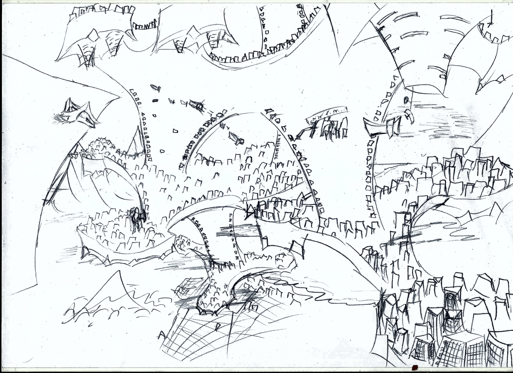

Bienvenidos a Arbakelios

Donde los sueños toman forma, las ambiciones encuentran su lugar y los destinos se cruzan.
Arbakelios es una ciudad construida sobre los ideales de la libertad, conocimiento y ambición. Un lugar donde las mentes brillantes pueden desentrañar los secretos de nuestro mundo, donde los héroes pueden perfeccionar sus habilidades y donde personas de todos los rincones pueden perseguir sus propios sueños.
Suspendida sobre las aguas del océano, Arbakelios es una maravilla de la ingeniería moderna y un símbolo del progreso de la civilización. Su arquitectura combina enormes estructuras industriales, distritos residenciales, centros de investigación y espacios recreativos, conformando una metrópolis que nunca deja de crecer.
La ciudad ofrece un entorno excepcional tanto para quienes desean desarrollar sus proyectos como para quienes buscan nuevas experiencias. Sus instalaciones científicas y tecnológicas atraen investigadores, inventores y empresarios; sus centros de entrenamiento reciben aventureros y aspirantes a héroes; y sus numerosos espacios culturales y recreativos ofrecen entretenimiento para visitantes de todas las edades.
Pero Arbakelios no es solamente un centro de innovación. También es una ciudad de encuentro, donde conviven diferentes culturas, tradiciones e intereses. Sus calles, plazas y distritos ofrecen una variedad de actividades, festivales y acontecimientos que mantienen viva su identidad.